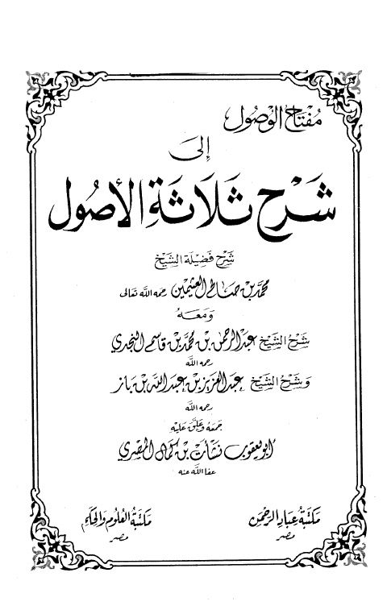

Downloads need an internet connection.
مفتاح الوصول إلى شرح ثلاثة الأصول
Authors: محمد بن صالح العثيمين
Editors: نشأت المصري
Publishers: مكتبة العلوم والحكم مكتبة عباد الرحمن
**▫️ العنوان: مفتاح الوصول إلى شرح ثلاثة الأصول** ▪️ المؤلف: #محمد_بن_صالح_العثيمين ▫️ المحقق: #نشأت_بن_كمال_المصري ▪️ الناشر: #مكتبة_عباد_الرحمن • #مكتبة_العلوم_والحكم ▫️ تاريخ النشر: 1429هـ 2008م ▪️ بلد النشر: القاهرة، #مصر ▫️ الطبعة: 2 ▪️ عدد الأجزاء: 1 ▫️ الصفحات: 256 ▪️ نوع الوعاء: #كتاب ▫️ التصنيف الرئيسي: #العقيدة_والمذاهب_والأديان ▪️ التصنيف الفرعي: #التوحيد ۪